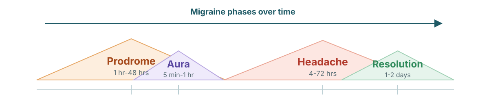

Migraine Companion
This companion presents the theory that migraine can begin when an energy force enters the deep-brain Prodrome Zone at a specific angle. The model keeps established anatomy separate from the hypothesis, letting readers explore how different angle paths may map to different warning signs before migraine onset.

01
The Prodrome Zone
Loading brain model...
02-05
The Structures
Loading brain model...
06
Angles of Force
Ready.
Loading brain model...